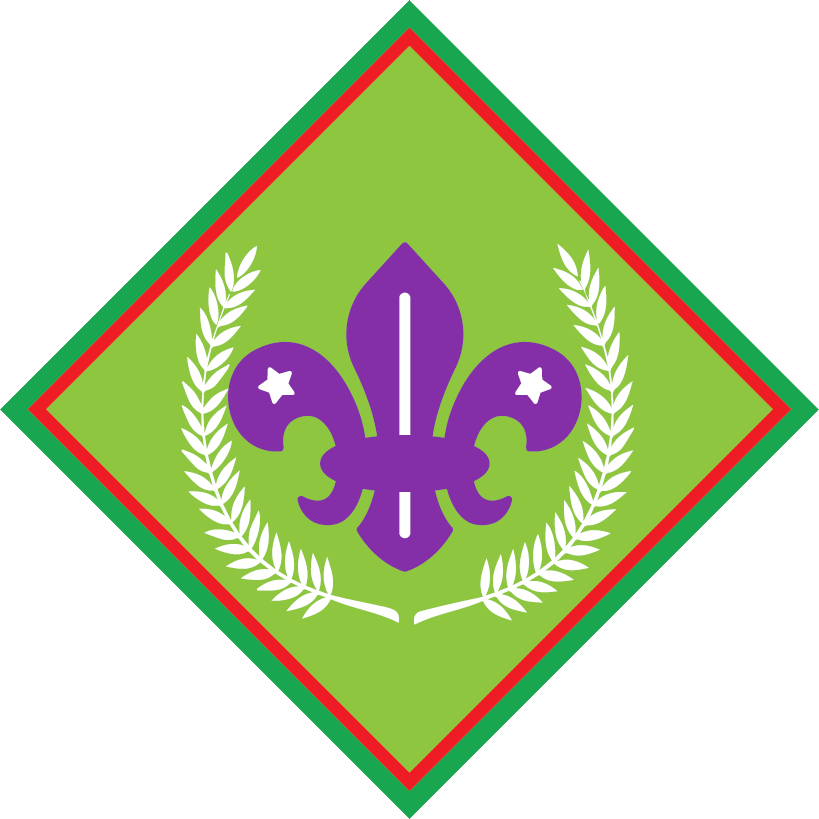

Scout advancement · Award overview
First Class
Build leadership through organising adventures and teaching others. Use the complete standard to select and confirm all badge choices.
Explore the steps ↓
Learn · Practise · Show
Your award at a glance
Our original award overview helps you plan. It is not the complete SSA assessment checklist. Confirm every task, choice and current requirement with your leader before assessment.
Plan adventures
Teach three mapping aspects to at least three younger Scouts. Lead a two-day expedition with an overnight and at least 20 km or equivalent; submit at least ten report pages within three weeks. Earn a listed navigation Interest badge.
Lead outdoors
Earn a listed outdoor Interest badge; run an overnight camp for at least three younger Scouts away from the hall. Demonstrate two conservation devices and lead a three-course open-fire meal for at least six people, including your examiner.
Serve and protect
Run at least ten community-service hours over at least a month. Complete movement and environmental service, personal safety and bullying-related work. Earn First Aid Interest and complete the second skills-badge requirement.
Develop leadership
Choose five of eight leadership requirements. This overview does not replace the complete options or examiner approval.
The complete standard
Check the detail
with your leader.
Source checked on 21 October 2026: SCOUTS South Africa Wiki, First Class Advancement Level, revision 19567. Requirements and course conditions can change; historical or incomplete references are flagged in the guide.
Official requirements and badge designs belong to SCOUTS South Africa. This First Factreton guide is an independent introduction; the current full official standard governs assessment.